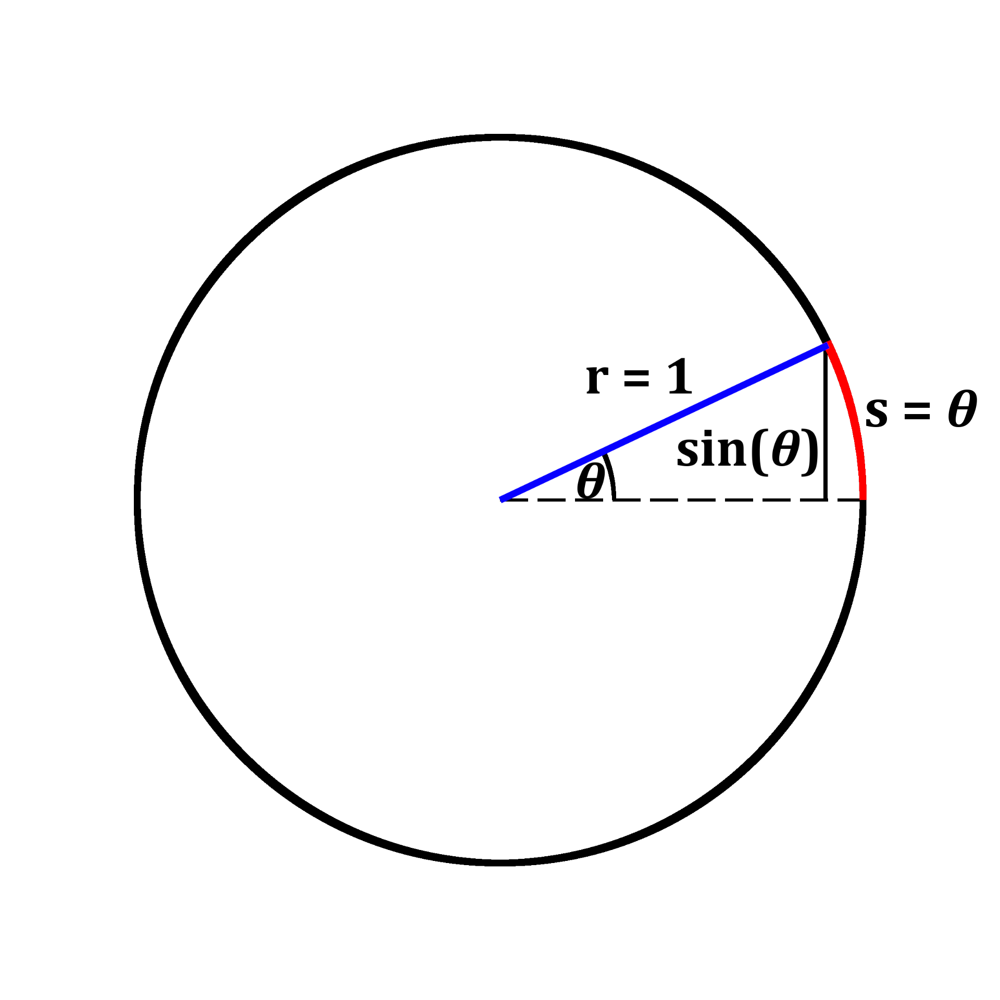
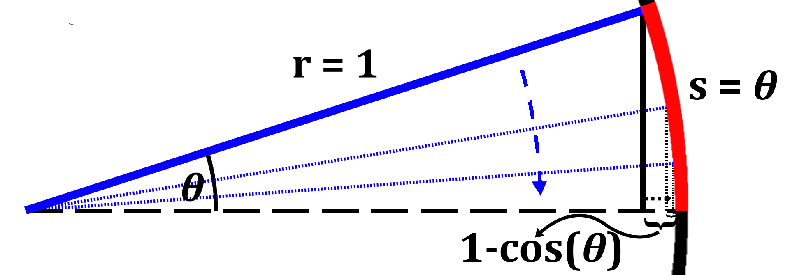

Lesson 1: Functions and Limits
Inifinity as a Limit, Undefined Limits, Continuity, and Trigonometric Limits
Section: Inifinity as a Limit, Undefined Limits, Continuity
A function is continuous bewteen a domain if the function is defined for all values of \(x\) within said domain and if a small change in \(x\) does not produce a sudden jump in the value of the output, \(y\). For example, if the function \(k(x)\) is defined for all \(x\) values between the interval \((-10,10)\) then the function is continuous over that same interval (assuming there is no jump). If a function is not continuous at any \(x\), then we say the function has a discontinuity at that value of \(x\). In essence, we say \(f(x)\) is continuous at \(x_0\) when \[ \lim_{x\to x_0} f(x) = f(x_0). \] Theorem: Differentiable Implies ContinuousIf a function \(f\) is differentiable at \(x_0\), then \(f\) is continuous at \(x_0\). [What is does it mean to be differentiable? Come back to this after completing Lesson 3.]
To conclude the continuity section, there are four types of discontinuities that one should be aware of:
-
Removable Discontinuity
A removable discontinuity is when a function is continuous everywhere but one value of \(x\). Take, for example, the function \(\frac{\sin(x)}{x}\), which is defined for \(x\neq 0\):
In essence, if \(\lim_{x\to x_0^+} f(x) = \lim_{x\to x_0^-} f(x)\) but is not equal to \(f(x_0)\), or if \(f(x_0)\) is undefined, we call the discontinuity removable. -
Jump Discontinuity
Jump disoncontinuities occur when the limits from both sides of a particular \(x\) value approach two different values, i.e. \(\lim_{x\to x_0^+}f(x)\neq\lim_{x\to x_0^-} f(x)\). For example, let's look at the graph of the piecewise function \(p\), defined by: \[ \begin{gather*} p(x) = \left\{ \begin{array}{11} (x+1)(x-1) & x<0 \\ 4x+1 & x>0 \end{array} \right. \end{gather*} \]
From the graph, we can see that \(p(x)\) approaches different values from the left and right of \(x=0\). Thus, \(p(x)\) has a jump discontinuity at \(x=0\). -
Infinite Discontinuity
An infinite discontinuity is when a function approaches infinity in the y-direction, this is the behavior that is seen in vertical asymptotes. An example of an infinite discontinuity is the fuction \(\frac{1}{x}\) at \(x=0\):
The right-hand limit as \(x\) approaches \(0\) is equal to positive infinity, \(\lim_{x\to 0^+}\frac{1}{x}=\infty\), and the left-hand limit as \(x\) approaches \(0\) is equal to negative infinity, \(\lim_{x\to 0^-}\frac{1}{x}=-\infty\). -
Essential Discontinuities
An essential disoncontinuity is one which doesn't fit any of the previous three types. There are several examples out there but the one mentioned here is the limit of \(\sin(\frac{1}{x})\) as \(x\) approaches \(0\), \(\lim_{x\to 0}\sin(\frac{1}{x})\). The graph of \(\sin(\frac{1}{x})\) is the following:
This function oscillates a lot as it approaches the origin, as is the case with other functions as well. For cases like this, it doesn't make sense to say the function goes to anything; not even \(\pm\infty\). Thus, we say the limit does not exist.
Section: Trigonometric Limits
Briefly, we felt it would be useful to go over the proof for two popular trigonometric limits. Particularly, \[ \begin{gather*} \lim_{\theta\to 0}\frac{\sin(\theta)}{\theta} = 1; & \lim_{\theta\to 0}\frac{1-\cos(\theta)}{\theta} = 0. \end{gather*} \] We will be using a geomtric proof for both. We start off with a circle with a radius of \(1\). Note that the angle \(\theta\) in this case is in radians and not degrees. The formula for the arc length of a circle is \(s=r\theta\), since \(r=1\), \(s=\theta\). Additionally, recall that the \(\sin\) of the angle \(\theta\) is equal to the quotient of the side opposite the angle and the radius. Since \(r=1\), the side opposite the angle \(\theta\) is equal to \(\sin(\theta)\): The first limit has \(\theta\) going to \(0\), thus we zoom into the circle and start decreasing the angle:
The main idea here is that as \(\theta\) decreases, goes to \(0\), \(\sin(\theta)=s=\theta\). This is a small angle approximation. Thus, \(\frac{\sin(\theta)}{\theta}=1\) and \(\lim_{\theta\to 0}\frac{\sin(\theta)}{\theta} = 1\).
Moving on to the second limit, the one involving the \(\cos\), we start off again with the same circle of radius \(1\) and labeling the arc length of the angle \(\theta\). However, because we are now involving a \(\cos\) we label the adjacent side to the angle \(\theta\) instead of the opposite. We label the side \(\cos(\theta)\). Note that because the length of the radius is \(1\), the remaining length of the radius along the adjacent side of the angle would be \(1-\cos(\theta)\):
If we zoom in we can see that as the angle \(\theta\) decreases the remaining length of the radius, the length of \(1-\cos(\theta)\), decreases as well: 
Thus, as \(\theta\) decreases, \(1-\cos(\theta)\) goes to \(0\) and, by extension, \(\lim_{\theta\to 0}\frac{1-\cos(\theta)}{\theta} = 0\), because the numerator goes to the \(0\), it makes the whole thing go to \(0\). You may be thinking that "plugging in \(0\)" would make the whole term equal to \(\frac{0}{0}\), an undeterminant form. However, \(\theta\neq 0\) in this proof, it only approaches it.
That brings us to the end of the theory behind limits and a few proofs. In the next section we will go over limit problems and how the different techniques used to evaluate them.
Last edited